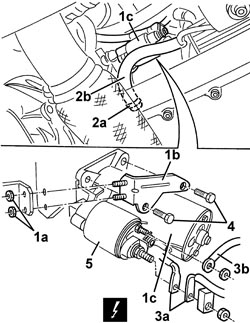
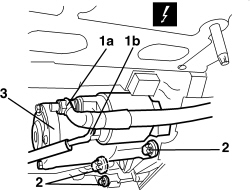
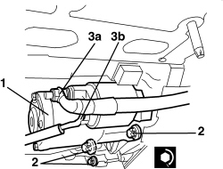
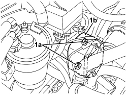
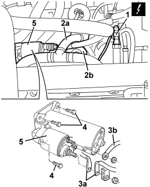
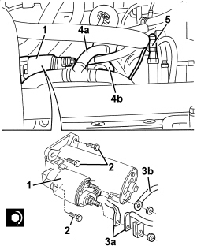

5520B10 STARTER MOTOR - R+R
- Path
- Procedures > 55 ELECTRICAL EQUIPMENT > 5520 ENGINE STARTING > 5520B STARTER MOTOR AND COMPONENTS > 5520B10 STARTER MOTOR - R+R
- Kind
- repair procedure (removal / refitting; the operation number is the code)
- Applies to
- all engines; all production periods
- Interactive page
- https://sloeber94.github.io/elrnDB-aBrrSpdr/en/#/946002363
Applies to: engines: 2.2 JTS; all production periods
 Removing
Removing
 Refitting
Refitting- Position the vehicle on a lift.
- Raise the vehicle.
Op. 7055B54 UNDER ENGINE PROTECTION/GUARD - R.R.
1. Undo the nuts (1a) and release the bracket (1b) for the starter motor (1c).
2. Open the band (2a) and move the pipe (2b) from the oil vapour separator to the oil sump.
3. Open the protective cover and disconnect the electrical connections (3a and 3b) for the starter motor.
Description | Component |
|---|---|
STARTER MOTOR |
4. Undo the bolts securing the starter motor.
5. Remove the starter motor.

Applies to: engines: 2.2 JTS; all production periods
Refitting
Removing- Check that the starter motor is not damaged.
- Place the starter motor in position.
- Tighten the starter motor fixing bolts to the specified torque.
Component | Fastening | dia | Value (daNm) | Validity |
|---|---|---|---|---|
STARTER MOTOR | Bolt | M8x45 | 2.2 ÷ 2.6 |
- Connect the electrical connections for the starter motor and close the protective cover.
- Place the pipe from the oil vapour separator to the oil sump in position and secure it using the band.
- Place the starter motor bracket in position and secure it using the nuts.
- Lower the vehicle.
- Remove the vehicle from the lift.
Applies to: engines: 3.2 JTS; all production periods
Removing
Refitting- Position the vehicle on a lift.
- Raise the vehicle.
Op. 7055B54 UNDER ENGINE PROTECTION/GUARD - R.R.
Op. 1072C30 LEFT EXHAUST MANIFOLD - R + R AND REPLACE GASKET
1. Open the protective cover and disconnect the electrical connections (1a and 1b) for the starter motor.
Description | Component |
|---|---|
STARTER MOTOR |
2. Undo the bolts securing the starter motor.
3. Remove the starter motor.

Applies to: engines: 3.2 JTS; all production periods
Refitting
Removing- Check that the starter motor is not damaged.
1. Place the starter motor in position.
2. Tighten the starter motor fixing bolts to the specified torque.
Component | Fastening | dia | Value (daNm) | Validity |
|---|---|---|---|---|
STARTER MOTOR | Bolt | M10x1.5x35 | 4.5 ÷ 5.5 | 3.2 JTS |
3. Connect the electrical connections (3a and 3b) for the starter motor and reclose the protective cover.

Applies to: engines: 3.2 JTS; all production periods
Op. 1072C30 LEFT EXHAUST MANIFOLD - R + R AND REPLACE GASKET
Op. 7055B54 UNDER ENGINE PROTECTION/GUARD - R.R.
- Lower the vehicle and remove it from the lift.
Applies to: engines: 2.4 JTD 20v; all production periods
Removing
Refitting- Position the vehicle on a lift.
Op. 1016A10 SOUND-PROOFING COVER - R.R
1. Undo nuts (1a) and move vacuum pump (1b).

Applies to: engines: 2.4 JTD 20v; all production periods
Op. 7055B54 UNDER ENGINE PROTECTION/GUARD - R.R.
1. Detach the electrical connection.
Description | Connector | |
|---|---|---|
1 | INSUFFICIENT ENGINE OIL PRESSURE SENSOR |
2. Disconnect pipe (2a) from oil vapour separator (2b).
Description | Connector | |
|---|---|---|
3 | STARTER MOTOR |
4. Undo the bolts securing the starter motor.
5. Remove the starter motor.

Applies to: engines: 2.4 JTD 20v; all production periods
Refitting
Removing- Check that the starter motor is not damaged.
1. Place the starter motor in position.
2. Tighten the starter motor fixing bolts to the specified torque.
Component | Fastening | dia | Value (daNm) | Validity |
|---|---|---|---|---|
STARTER MOTOR | Bolt | M8x45 | 2.2 ÷ 2.6 |
3. Secure electrical connections (3a and 3b) for the starter motor and reclose the protective cover.
4. Connect pipe (4a) to oil vapour separator (4b).
5. Secure the electrical connection for the engine oil pressure sensor.

Applies to: engines: 2.4 JTD 20v; all production periods
Op. 7055B54 UNDER ENGINE PROTECTION/GUARD - R.R.
- Lower the vehicle.
- Position the vacuum pump and tighten the nuts.
Op. 1016A10 SOUND-PROOFING COVER - R.R
- Remove the vehicle from the lift.
Topics linked from this page (5)
- 1016A10 SOUND-PROOFING COVER - R.R
- 1072C30 LEFT EXHAUST MANIFOLD - R + R AND REPLACE GASKET
- 7055B54 UNDER ENGINE PROTECTION/GUARD - R.R.
- A020 STARTER MOTOR
- K030 ENGINE OIL PRESSURE SENSOR (SWITCH)